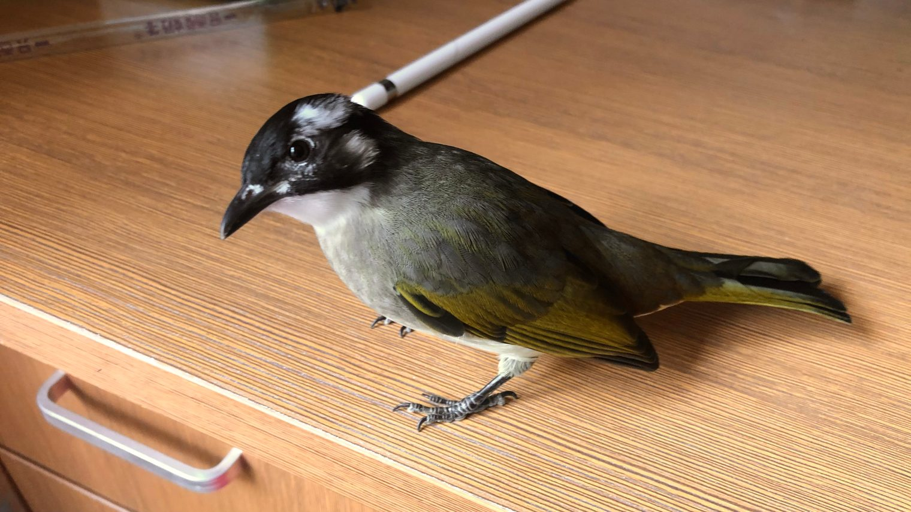

接连几天的阴雨，今天是个难得的晴天，也是四个月以前来我家的小白头翁飞离的日子。算来不过短短一百多天，却觉得有它在的日子已经很长了，已积累了好多回忆，100天的时候我还专门写了一篇文章记录那些有意思的点滴。
其实一百多天里我心中的矛盾起起伏伏，总没有消失过。对于这只五月份才出生的小精灵来说，未来的十多年生命里，我家这促狭的空间也许是一种幸福的桎梏——形容词再美好，名词仍带憾意。在这小世界之中它可以不愁吃喝、不担心风雨雷电、不害怕天敌威胁，但它却到不了透明墙壁后那个更大的世界。那个世界里有树与花，有微风阳光，还有它的同族。那个世界没有屋顶、没有墙壁，我时不时会把自己当作它，想象身处两个空间的巨大不同。对于天生拥有翅膀的生命而言，在小世界里过一生实在太可惜了。
于是，即使它的意外飞出令我很是失落，即使我把鸟笼放上阳台、仍无望地期望着它回来，即使我担心从小生长在室内的它无法适应大世界的严酷，我还是觉得那是它本应该去的世界。说不定我一直隐隐期望着它有离开的一天。
夕阳渐落，我在阳台上发了一会呆，尝试在外面的树上找到它的身影。转念就不知怎地想起了上周的一个雨天。那是一个工作日的中午，我一个人打着伞匆匆走路，伞下突然窜进一个小男孩。他头发已经被雨淋湿了，边快步走跟上我的速度，边自己嘟囔着倒霉遇到雨，只是不提蹭我雨伞的事，真是鬼。我问清他是要去几百米外、马路对面的公交站，就说那我送你过去吧。他问那你是去哪里，然后说那不是你要绕路。我笑笑说没关系，右手打伞，左手搂住他肩膀，小跑着送他赶上公交车。当他喊出谢谢的那刻，我知道这一小段旅途就此结束了，未来或许我们不会再遇见，即使遇见也无法认出。拿着伞继续快步走着，心中还泛着暖意，隐约回想起去年某个香港的早上。那天角色互换，是我在一个行人坞上等红绿灯时，被忽降的大雨劈头淋湿，而一个大叔在我头上撑起了伞。
这种琐碎的、难回报的善意，甚至算不上一期一会，但无论你是给予还是接受的那一个，都可能记挂许久。
于是又想起前不久才通关的游戏《死亡搁浅》，带着冰冷恶意的雨、山穷水尽，这时眼前却出现了素不相识玩家搭建的避雨亭。那种心中的暖意相信人人都有体会，于是在之后的旅途中，也时常会想要留下些物资和建筑帮助后来人。又或是《黑暗之魂》中的传火之情，或是《风之旅人》中的一唱一和，或是《Shelter》一群群动物们的结伴旅行。你之所予，我亦予人；今日之因，明日之果，后日再成因，那份暖意便像波纹一样传开去，像火焰一样燃烧不灭。《死亡搁浅》的主人公一路奔波重新连接整个美国，而重要的其实并非物与物的相连，而是人与人、生命与生命之间的相连。连接并不一定长久，但一定会给彼此留下些什么。
看似虚幻的游戏与现实又是何等奇妙地互相映衬，看看《死亡搁浅》与席卷全球的新冠疫情吧。也同样是疫情，逼迫我留在了老家如此长的时间，并因此遇见了那时还是幼仔的小白头翁。疫情斩断了多少连接，又有多少连接建立于其中？
原谅我将话题延伸到这么远，看起来是把最近脑中想表达的一些东西串了起来，但实际上逼到我不得不写点什么的，还是小白头翁的事吧。也许我的中心思想，已恰巧被今晚店里放出的两首歌表达出来了——“能同途偶遇在这星球上，是某种缘分，我多么够运。” 然后是另一首，只不过我改了一两字：“水点蒸发变作白云，花瓣飘落下游生根。淡淡交会过，各自留下印。亦是经历过，最温柔共振。”
这几个月里虽然没能教你觅食御敌交朋友之类的本领，但至少把你照顾得健健康康、漂漂亮亮，我们也得到了很多欢笑与治愈作为回报。尽管我们并没有准备好，但那个大世界里的一切，美丽的、危险的，现在都交还给你了，包括你的自由。未来非我所能及，此刻还能送出的就只剩下祝福与感谢了。
谢谢你曾来避雨，谢谢你曾与我相连。
